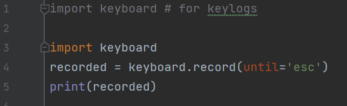
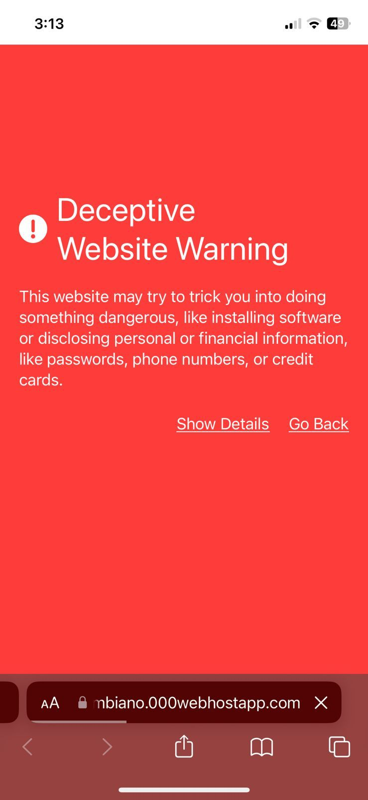

How easy it is to hack

Even for people who do not know much (me).
Even for people who do not know much (me).
Before the experiment, both of them were explicitly asked if they allowed me to access their school's account. We agreed everything was allowed except for installing software into their devices, physically altering them, or anything that could have permanent consequences.
In my plan, I was mainly going to use social engineering

The Merriam-Webster dictionary defines social engineering as such: "social methods (such as phishing) that are used to obtain personal or confidential information which can then be used illicitly". In other words, social engineering is the act of "manipulating" people to give you unauthorized access or information, such that they are unaware of being manipulated.
Around 98% of all cyber attacks rely on Social Engineering. Meaning that many cyber attacks can be avoided if people learn about common social engineering practices, and avoid falling for them. Most hacks are not done by an attacker hacking into a database, gaining the passwords for your account. No, that's way too hard and time-consuming. Doing that with large companies like Instagram and Google, it's practically impossible, their securities are way too high. And even if they gain access, the passwords are almost always encrypted and hard to decrypt. That's why, most hackers just hope you fall for simple traps they themselves create.

This was the laziest attack ever, yet one that many people can fall for. This attack was done with a keylogger.
A piece of software that records keystrokes (keys pressed), usually with the purpose of storing sensitive information and sending them to a malicious attacker. Example: If you accidentally download a keylogger, every character you type will be sent to an attacker, which means that they might be able to know your passwords.
And so what I was thinking of doing was quite simple: I would ask my friends to fill in a form for my Personal, telling them my email wasn't working, so they should login in on my computer. I offered them an incognito tab, and told them they should close it afterwards, acting as if I cared for their security and wasn't planning anything. While all of that was happening, I will have a simple script in Python running that will record the keystrokes. Like they are logging in, the passwords will be stored in the keylogger.
You might think that it would be impossible for people to fall for such a dumb trap, but honestly, one of my friends actually fell for it without a flinch. The only reason why the other one didn't, was because I got slightly too cocky and accidentally told them how I have gotten my other friend's password.
Firstly, if you accidentally download a keylogger, a bunch of passwords and sensitive information could be stolen. Hence, it's extremely important to be careful with what you download. In the same way, if you log into your account in a public computer (i.e a café or library), a hidden keylogger could be installed. As a general rule be careful where you input your private information and your passwords. Avoid logging in on computers that are not yours.
Next up: phishing page. This attack was so much harder than the last, though it was more interesting and rewarding too. With it, I was able to learn a bit of web development.
A website that appears to be one which isn't, with the purpose of you logging in sensitive information. Example: an Instagram phishing page will appear like Instagram, but if you enter any sensitive data, it will be sent to the attacker/actual owner of the site.
To get into my friend's Google account, I had to create a Gmail login phishing page. For this task, I would need to copy the publicly available HTML and CSS source code and slightly alter it.
So after a bit of copy and pasting and tweaking some sections, I had a website that appeared quite similar to Google's login. At the same time, I inserted some code to save the text written in the password and username section. Now for the not so fun part, I had to make sure the information got sent to me. Most sites implement databases and PHP to save users info, I was far too lazy to learn any of that, so I concluded that the easiest way to accomplish my task was to send the info by email. Oh, how wrong I was. I suffered quite a lot, tried multiple apps to help me send the email, and ended up using this one: elasticemail.com, it functioned decently. I hosted the site, and was met with this horrendous sight:

Safari and chrome had detected my site and a phishing page, and nobody was entering their info in a site with that warning. After mentally collapsing once more, I changed the code of my site so it wouldn't appear as suspicious, safari stopped showing that warning, google continued on detecting it. Still, I was expecting the friends to open it safari, so I really didn't care. Now, I just asked another friend to send the site for me, making them say it was for a forms that they needed people to complete. After entering your information, the site redirected you to a forms I created. After some time, I had once again gained the password for both of my friends.
Phishing pages are not hard to make. Frustrating, yes, but not impossible. Hence, it's crucial to be able to identify them, even if no warning from Google or safari appears. How can you do that? Identifying the URL and domain of the site. Only google can use the Google.com URL, which means that people creating phishing sites have to create another one. Often it's quite similar, such as gooogle.cm, but It's still not the same. If you want to learn more, here is a site that can help you identify a phishing site: site
I modified the phishing page I created so it didn't send the info to my email. It shows how a site can redirect itself to another one and how it can closely resemble a site that it isn't. Click here to access it. Just enter random info, don't enter your actual logins. Also, take care to notice the URL of the site, as a way to identify it as phishing.